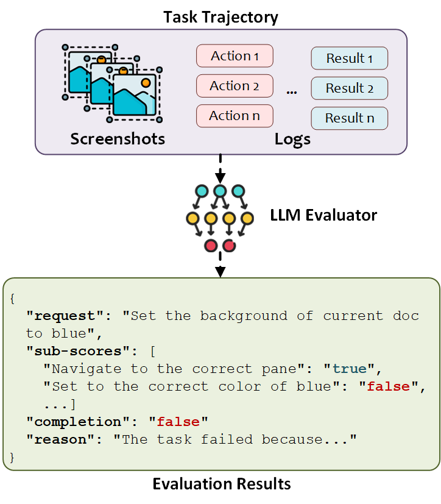

EvaluationAgent
The EvaluationAgent evaluates whether a Session or Round has been successfully completed by assessing the performance of the HostAgent and AppAgent in fulfilling user requests. Configuration options are available in config/ufo/system.yaml. For more details, refer to the System Configuration Guide.
The EvaluationAgent is fully LLM-driven and conducts evaluations based on action trajectories and screenshots. Since LLM-based evaluation may not be 100% accurate, the results should be used as guidance rather than absolute truth.

Configuration
Configure the EvaluationAgent in config/ufo/system.yaml:
| Configuration Option | Description | Type | Default Value |
|---|---|---|---|
EVA_SESSION |
Whether to evaluate the entire session. | Boolean | True |
EVA_ROUND |
Whether to evaluate each round. | Boolean | False |
EVA_ALL_SCREENSHOTS |
Whether to include all screenshots in evaluation. If False, only the first and last screenshots are used. |
Boolean | True |
Evaluation Process
The EvaluationAgent uses a Chain-of-Thought (CoT) mechanism to:
- Decompose the evaluation into multiple sub-goals based on the user request
- Evaluate each sub-goal separately
- Aggregate the sub-scores to determine the overall completion status
Inputs
The EvaluationAgent takes the following inputs:
| Input | Description | Type |
|---|---|---|
| User Request | The user's request to be evaluated. | String |
| APIs Description | Description of the APIs (tools) used during execution. | String |
| Action Trajectories | Action trajectories executed by the HostAgent and AppAgent, including subtask, step, observation, thought, plan, comment, action, and application. |
List of Dictionaries |
| Screenshots | Screenshots captured during execution. | List of Images |
The input construction is handled by the EvaluationAgentPrompter class in ufo/prompter/eva_prompter.py.
Outputs
The EvaluationAgent generates the following outputs:
| Output | Description | Type |
|---|---|---|
| reason | Detailed reasoning for the judgment based on screenshot analysis and execution trajectory. | String |
| sub_scores | List of sub-scoring points evaluating different aspects of the task. Each sub-score contains a name and evaluation result. | List of Dictionaries |
| complete | Overall completion status: yes, no, or unsure. |
String |
Example output:
{
"reason": "The agent successfully completed the task of sending 'hello' to Zac on Microsoft Teams.
The initial screenshot shows the Microsoft Teams application with the chat window of Chaoyun Zhang open.
The agent then focused on the chat window, input the message 'hello', and clicked the Send button.
The final screenshot confirms that the message 'hello' was sent to Zac.",
"sub_scores": [
{ "name": "correct application focus", "evaluation": "yes" },
{ "name": "correct message input", "evaluation": "yes" },
{ "name": "message sent successfully", "evaluation": "yes" }
],
"complete": "yes"
}
Evaluation logs are saved in logs/{task_name}/evaluation.log.
See Also
- System Configuration - Configure evaluation settings
- Evaluation Logs - Understanding evaluation logs structure
- Logs Overview - Complete guide to UFO logging system
- Benchmark Overview - Benchmarking UFO performance using evaluation results
Reference
Bases: BasicAgent
The agent for evaluation.
Initialize the FollowAgent. :agent_type: The type of the agent. :is_visual: The flag indicating whether the agent is visual or not.
Source code in agents/agent/evaluation_agent.py
25 26 27 28 29 30 31 32 33 34 35 36 37 38 39 40 41 42 43 44 45 46 47 | |
status_manager
property
Get the status manager.
evaluate(request, log_path, eva_all_screenshots=True, context=None)
Evaluate the task completion.
| Parameters: |
|
|---|
| Returns: |
|
|---|
Source code in agents/agent/evaluation_agent.py
113 114 115 116 117 118 119 120 121 122 123 124 125 126 127 128 129 130 131 132 133 134 135 136 137 | |
get_prompter(is_visual, prompt_template, example_prompt_template)
Get the prompter for the agent.
Source code in agents/agent/evaluation_agent.py
49 50 51 52 53 54 55 56 57 58 59 60 61 62 63 | |
message_constructor(log_path, request, eva_all_screenshots=True)
Construct the message.
| Parameters: |
|
|---|
| Returns: |
|
|---|
Source code in agents/agent/evaluation_agent.py
65 66 67 68 69 70 71 72 73 74 75 76 77 78 79 80 81 82 83 84 85 86 | |
print_response(response_dict)
Pretty-print the evaluation response using RichPresenter.
| Parameters: |
|
|---|
Source code in agents/agent/evaluation_agent.py
145 146 147 148 149 150 151 152 153 154 | |
process_confirmation()
Comfirmation, currently do nothing.
Source code in agents/agent/evaluation_agent.py
139 140 141 142 143 | |